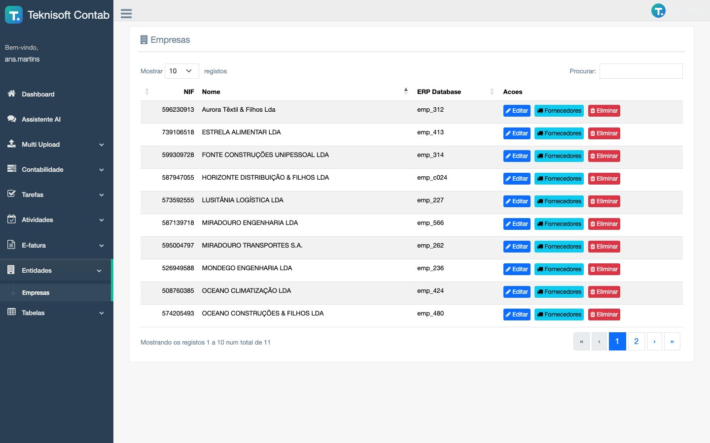
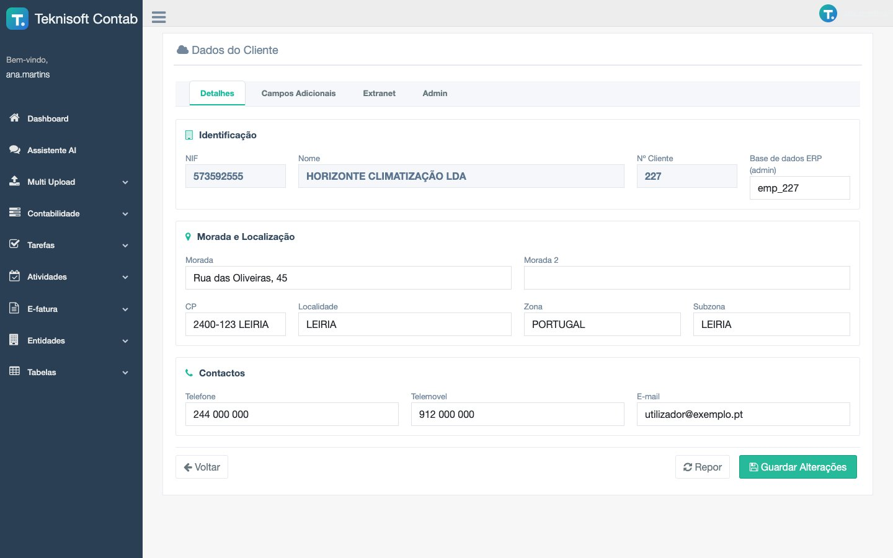
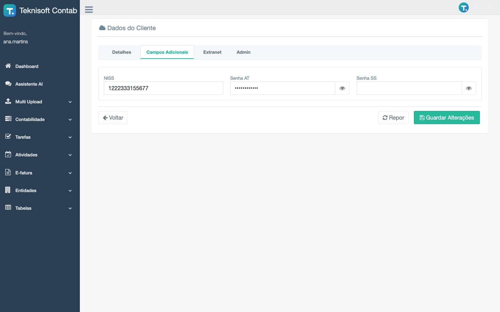
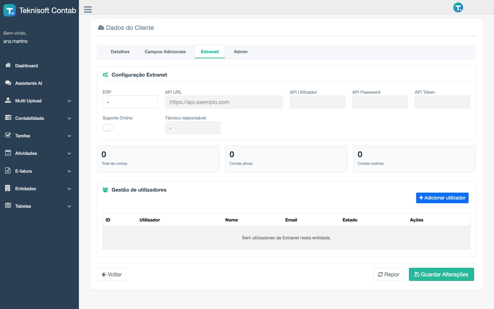
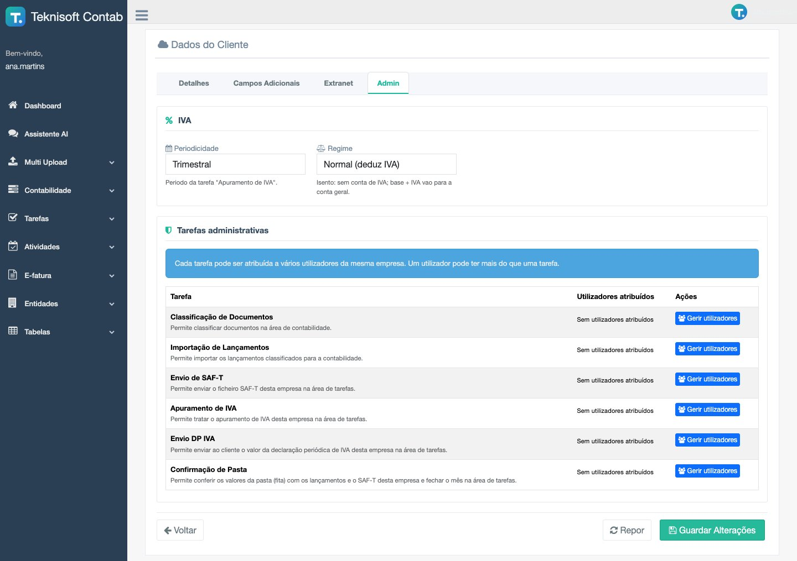
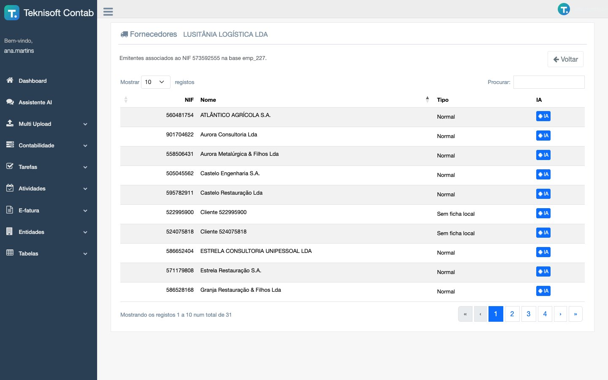

Entidades e clientes
A ficha de cada cliente do gabinete reúne a identificação (lida do ERP), os campos próprios do gabinete, o acesso à área reservada, o regime de IVA e as permissões de quem trata a empresa.
Lista de empresas
Menu Entidades > Empresas. Lista os clientes do gabinete com NIF, nome, número de cliente e base ERP. A pesquisa procura por nome, NIF ou código ERP.

Os dados de identificação, morada e contactos são lidos diretamente do ERP através do ERP-SINC. O Teknisoft Contab não mantém uma cópia paralela: o que se altera na ficha é gravado no ERP.
Separador Detalhes

- NIF, Nome, Nº Cliente: identificação no ERP.
- Base de dados ERP (apenas administradores): a base de contabilidade do cliente, no formato
emp_XXX. É o campo que define para onde vão os lançamentos deste cliente. - Morada e Localização, Contactos: editáveis; Guardar Alterações grava no ERP, Repor volta aos valores lidos.
Se a Base de dados ERP estiver vazia, os documentos deste cliente podem ser classificados mas, na importação, o sistema pede para escolher a base manualmente.
Separador Campos Adicionais

Mostra os campos definidos em Tabelas > Campos Adicionais. Os campos do tipo palavra-passe ficam ocultos e cifrados; a visibilidade depende da permissão Entidades - Ver Campos Adicionais.
Separador Extranet

- Configuração Extranet: software de faturação do cliente e credenciais de API (para recolha automática de documentos/SAF-T), suporte online e técnico responsável.
- Gestão de utilizadores: crie contas para o cliente entrar na sua área reservada. Cada conta pode ser ativada ou desativada.
- Impersonar: abre a área do cliente tal como ele a vê, sem precisar da palavra-passe, para dar apoio. Fica registado em auditoria e um aviso no topo permite terminar.
Ver Área reservada do cliente.
Separador Admin

IVA
| Campo | Efeito |
|---|---|
| Periodicidade | Mensal ou Trimestral. Define o período proposto no Apuramento de IVA. |
| Regime | Normal (deduz IVA) ou Isento (art. 9.º CIVA). Num cliente isento, a classificação deixa de pedir conta de IVA e o lançamento põe base + IVA na conta geral. |
Tarefas administrativas
Para cada tarefa (Classificação de Documentos, Importação de Lançamentos, Envio de SAF-T, Apuramento de IVA, Envio DP IVA, Confirmação de Pasta), Gerir utilizadores escolhe os técnicos responsáveis por este cliente. Uma tarefa pode ter vários técnicos e um técnico pode ter várias tarefas.
É aqui que se constrói a carteira de cada pessoa: um técnico só vê nos ecrãs de classificação e de tarefas os clientes em que está atribuído.
Fornecedores do cliente e instruções IA
Na ficha, o atalho Fornecedores lista os emitentes com documentos para este cliente na base ERP, com o tipo (Normal, Banco, Seguradora) e o botão IA.

As Instruções IA de cada par fornecedor + cliente são regras em linguagem natural que o motor de classificação aplica sempre que chega um documento desse fornecedor para esse cliente. Ver Regras personalizadas por fornecedor e cliente.